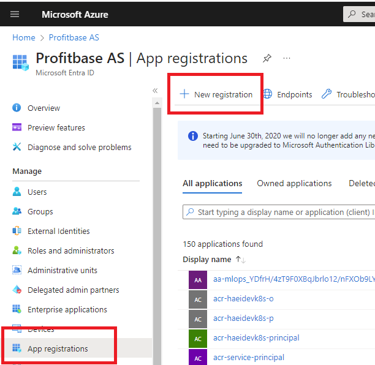
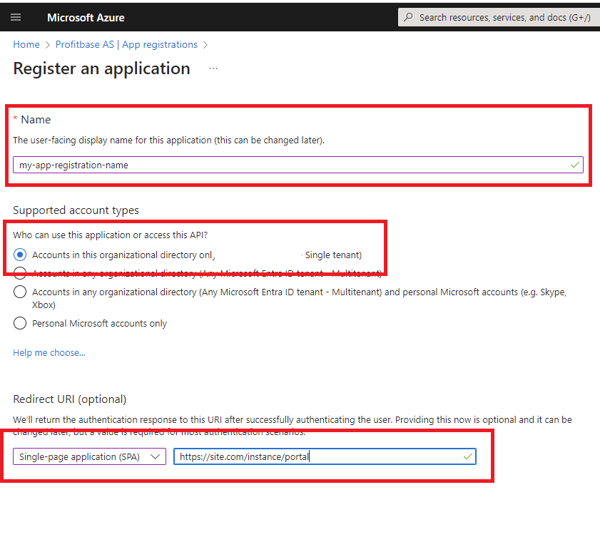
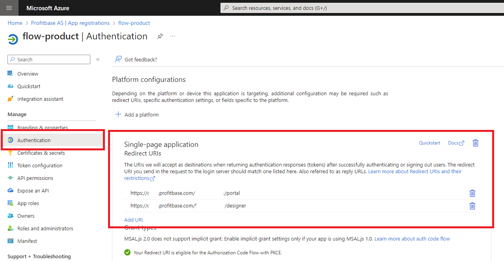
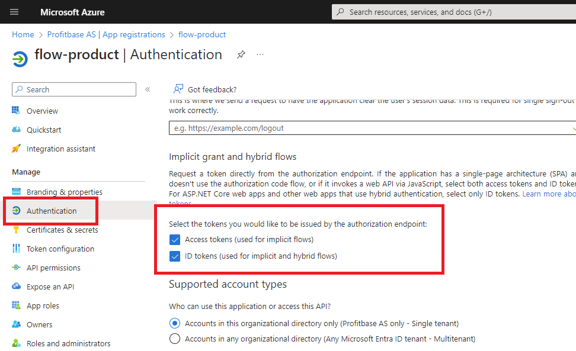
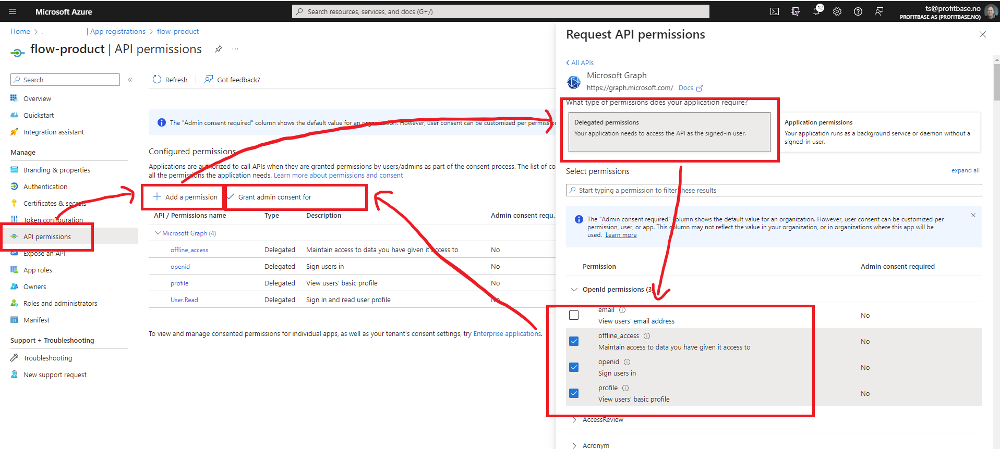
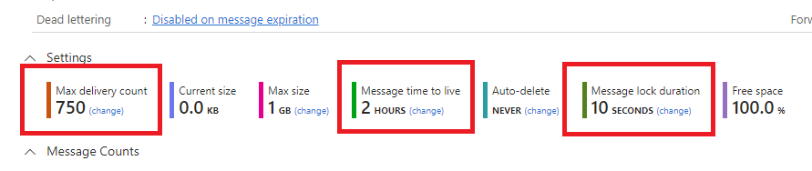

Step-by-step installation (On-premises)
Step 1: Download and install .NET 7 Hosing Bundle
Download and install .NET 7 Hosing Bundle from here.
Step 2: Create an Entra ID Application registration
1) Create the app registration
In the Azure portal, go to Microsoft Entra ID -> App registrations and choose New registration

- Enter the name of the app registration. This is the name of the application registration in the Azure portal. It can be whatever you like, but you should choose a meaningful name.
- Under Supported account types, choose Accounts in this organizational directory only ([Your company - Single tenant])
- Under Redirect URI, choose Single-page application (SPA).

2) Configure authentication
Under Authentication, add the following Redirect URIs:
- https://site.com[/instance]/designer
- https://site.com[/instance]/designer/
- https://site.com[/instance]/portal
- https://site.com[/instance]/portal/

Under Authentication, enable:
Access token
Id token

3) Configure API permissions
Under API Permissions, enable the following Delegated permissions for Microsoft Graph:
User.Read
openid
profile
offline_access

Step 3: Create Azure Service Bus queues and topics
- In the Azure portal, choose an existing Service Bus Namespace or create a new one.
- Create queue profitbase-flow-[instance name]-execution-queue
- Create topic profitbase-flow-[instance name]-change-notification-topic
- Create topic profitbase-flow-[instance name]-execution-broacast-topic
Note
You can name the queue and topics however you want. The names above are just a naming convention.
Configure each queue and topic as follows:
Max delivery count: 750
Message time to live: 2 hours
Message lock duration: 10 seconds

Step 4: Create an Azure Blob container
- In the Azure portal, choose a Storage account or create a new one.
- Add a new container named profitbase-flow-[instance name]. Permissions must include Read, Add, Create, Write, Delete and List.
- Create a SAS Uri
Step 5: Install the software using Profitbase Installation Manager
- Install Profitbase Installation Manager from here. Choose version 5.3.0.8 or higher.